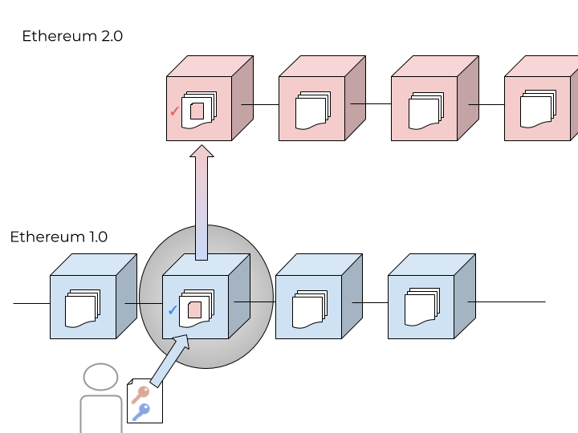

There are some new terms that might be confusing with Ethereum 2.0, we wanted to list a few here to help you understand them better.
First, we should mention there's a discussion around even the term "Ethereum 2.0." Some folks would like there to just be the "Application Layer" and the "Consensus Layer". Here's the distinction, from Ethereum Foundation's Danny Ryan:
What we call “eth2” is a series of major upgrades to Ethereum’s consensus-layer – to ensure the protocol is secure, sustainable, and scalable – while “eth2 clients” are implementations of this proof-of-stake consensus.
And, what we call “eth1” in this context is Ethereum’s rich application-layer, and similarly, “eth1 clients” (after the upgrade to proof-of-stake) are the software that does the heavy lifting in this layer. Ethereum’s application-layer is currently driven by a proof-of-work consensus algorithm but will soon be driven by the beacon chain – the proof-of-stake consensus mechanism that is currently in production and secured by ~7.7M ETH.
People are still using the term Ethereum 2.0 or Eth2 (like we are in this course), but eventually both chains will just be "Ethereum"!
Okay, here are some more Ethereum 2.0 terms and their explanations:
Proof of Stake is the new consensus mechanism for Ethereum. It currently is the consensus mechanism for the Beacon chain. Eventually, the Ethereum 1.0 chain will migrate to the Ethereum 2.0, replacing mainnet's consensus mechanism from Proof of Work to Proof of Stake.
Actors that are validating the network state in the Beacon chain are called validators.
Ethereum 2.0’s consensus mechanism has a couple of rules that are designed to prevent attacks on the network. Any validator found to have broken these rules will be slashed and ejected from the network. Slashing means that a significant part of the validator’s stake is removed: up to the whole stake of 32 ETH in the worst case.
Slashing is interesting because it is a financial disincentive for behavior on public blockchains. As we read earlier about Proof of Work, there are only incentives for people to act in accordance with the network consensus layer.
Staking as a Service is where you give your (32*n) ETH to a service which handles all of the validating process for you for a fee. Much easier mental load, great for institutional interest.
For people with less than 32ETH (which has become very expensive now!), there are some interesting options of decentralized pools where you can contribute either validator power or less than 32ETH. The staking pools combine that and distribute the staking rewards accordingly.
A full list of these services can be found here. The Ethereum Due Diligence Committee is doing their best to provide an unbiased assessment of these services.
The Deposit contract is the pivot point from Ethereum mainnet to the Beacon Chain for actors wishing to become validators on the Beacon Chain. In order to register as a validator on the network, a user must generate Ethereum 2.0 keys by making a one-way deposit of ETH into the official deposit contract.
(You should not send ETH to this contract directly! You will lose those funds forever!)
Proof of Stake consensus mechanisms offer finality: After a small period of time, a block is declared final, which means that it can never be changed. All the transactions in that block and all previous transactions are permanent, immutable, and guaranteed forever.
However, Finality presents some issues around Weak Subjectivity: If ⅓ of validators withdraw their stake and continue signing blocks and attestations, they can form a chain which conflicts with the finalized state. If your node is far enough behind the chain head to not be aware that they’ve withdrawn their funds, the exited validators can trick you into following the wrong chain. (source)
Well-behaved validators who have successfully and properly exited the chain can sell their private keys on the black market to a malicious actor. (There is no financial disincentive for them to do this as their funds have safely exited the protocol).
You can read more about Weak Subjectivity and how to address it here.
Secret Shared Validators (SSV) is the first secure and robust way to split a validator key for ETH staking between non-trusting nodes, or operators. The protocol enables the distributed control and operation of an Ethereum validator. The key is split in such a way that no operator must trust the other to operate, a certain amount can go offline without affecting network performance, and no operator can take unilateral control of the network. The result is decentralization, fault tolerance, and optimal security for staking on Ethereum.
Database sharding is used in conventional computer programming to increases scalability of large systems. From this article:
A database shard is a horizontal partition of data in a database or search engine. Each individual partition is referred to as a shard or database shard. Each shard is held on a separate database server instance, to spread load.
Some data within a database remains present in all shards, but some appears only in a single shard. Each shard (or server) acts as the single source for this subset of data.
Ethereum 2.0 leverages traditional database sharding to decrease the amount of memory needed to maintain the full state of the network. Originally meant to be 1024 shards, the current spec will produce 64 database shards. Each of these shards will have their own validators. They will periodically check into the beacon chain using crosslinks, which is a summary of the state of that shard and the only representation of the shard on the Beacon Chain.
Phase 1 is meant to reduce the resources needed to use Ethereum in a decentralized way. Currently, to interact with Ethereum network on your own node, it requires 500GB of memory and significant RAM, not to mention syncing time. With sharding and light clients, the idea is to decrease the amount of information needed to submit your own, valid transactions.
Read more about sharding on Ethereum 2.0 here.
The key signature system Ethereum 2.0 will be using is BLS. BLS allows multiple digital signatures to be collapsed into a single verifiable one. This is helpful with collecting attestations of the beacon (“votes in regards to the validity of a shard block or beacon”). Most pertinent for us, the BLS scheme is different from the scheme used for Ethereum 1.0.
To swap out the encryption curve, Ethereum core developers have come up with a clever solution, which is a classic handshake:

In the diagram above, the blue key and boxes represent Ethereum 1.0 and its cryptographic scheme and the red key and boxes represent Ethereum 2.0 and its cryptographic scheme. The deposit contract, which exists on Ethereum 1.0 Mainnet, allows the user to prove they have private keys for Ethereum 1.0 and Ethereum 2.0. Here’s how that works:
The transaction submitted to the deposit contract on Ethereum 1.0 has to be signed by an Ethereum 1.0 private key (like any transaction submitted on Mainnet). However, that transaction is wrapped around another private key signature, the Ethereum 2.0 private key. The beacon chain is watching the deposit contract on Ethereum 1.0, if a valid transaction is submitted to the contract with the correct balance, the beacon chain then unwraps the first layer of encryption and accesses the second layer, the Ethereum 2.0 digital signature. That is used to confirm the Ethereum 2.0 validator address and connect it to an Ethereum 1.0 address.
Here's how that handshake looks in the Beacon Chain contract deployed to Ethereum mainnet:
The final phase of Ethereum 2.0 deals with the execution environments present on each shard. in Ethereum 1.x, the execution environment is the Ethereum Virtual Machine, a Turing-complete programming language that provides a universal computation environment for all in the network to use.
However, this universality comes at an efficiency cost. The EVM is slow compared to modern processing languages. Phase 2 addresses this processing cost by using a version of WebAssembly, a new type of code developed by Mozilla. It allows code written in C, C++ or Rust but executed in the browser to run at near-native speeds. (For more information about the implications of WebAssembly for the broader web, please see this video: "Rust, WebAssembly and the Future of Serverless")
In Phase 2, each shard will be allowed a unique execution environment. While at least one will be running the EVM (for sake of continuity), it's possible others will be running execution environments (EEs) for Libra, Bitcoin, or any other blockchain network.
Note: This may change as the Eth1-Eth2 merge gets closer. It seems as though the emphasis may be on getting the Beacon Chain executable on EVM, rather than various execution environments.